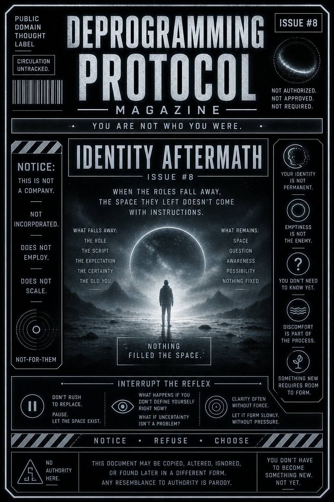

When the roles fall away…
what remains isn’t immediately clear.
There’s space.
And not everyone likes what shows up there.
This issue exists to explore what happens after identity structures loosen or dissolve.
It teaches you to notice when:
…and why that space can feel disorienting…
even when it’s freeing.
You stopped reacting the same way.
You broke pattern.
You stepped out.
Now something’s different.
But nothing rushed in to replace it.
No new identity.
No clear position.
No immediate certainty.
Just… space.
At first, it can feel like:
Because identity used to fill that space.
It gave you:
Without it…
You’re not sure what comes next.
So the pull returns:
“Go back.”
“Pick a side.”
“Be something again.”
Not because it’s true…
but because it’s familiar.
You don’t need to rush the space.
That’s the reflex.
Pause there.
Yeah. Still you.
Still not snapping into a role.
Good.
Ask:
Let it exist.
You don’t need to fill it immediately.
Clarity doesn’t always arrive with force.
Sometimes it forms slowly…
when nothing is forcing it.
This publication does not provide replacement identities.
No role will be issued.
No position will be assigned.
No narrative will be offered as a substitute.
Any urge to immediately redefine yourself
originated elsewhere.